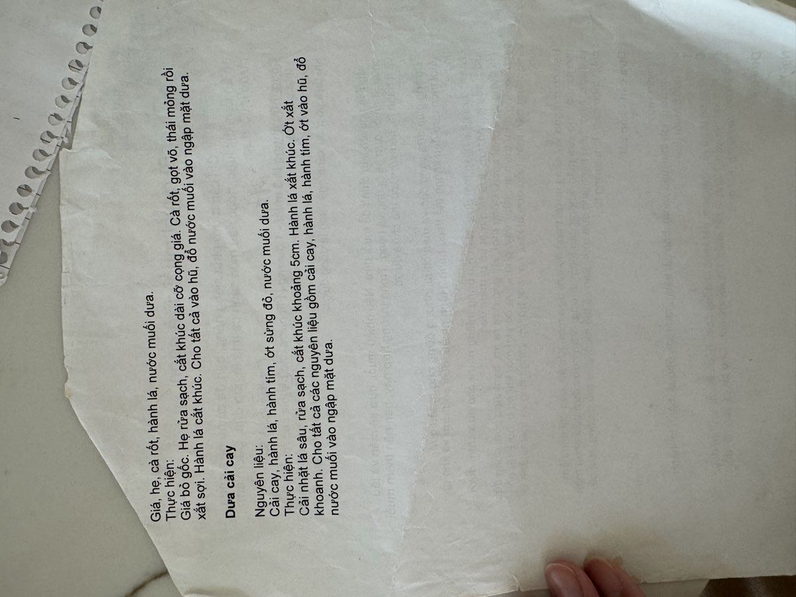

← Back to recipes
Dưa Cải Cay
Pickled Mustard Greens
From Mẹ — Oanh
Nguyên liệu · Ingredients
- 1 large bunch mustard greens (cải cay), about 1.5 lbs
- 2 stalks green onion (hành lá), cut into sections
- 3–4 shallots (hành tím), thinly sliced
- 2–3 red horn chilies (ớt sừng đỏ), sliced
- 2 tablespoons salt (muối)
- Water, enough to submerge
Cách làm · Instructions
- Wash the mustard greens thoroughly, separating the leaves and shaking off excess water. Cut the stems and leaves into pieces about 5cm long. If the stems are thick, slice them in half lengthwise so they pickle evenly.
- Lay the cut greens out in the sun for a few hours to wilt slightly. This step isn't strictly necessary, but Mẹ always did it — she said it helps the cải cay stay crunchy and absorb the brine better.
- Slice the green onion into sections. Thinly slice the shallots and the red chilies.
- Layer everything into a clean glass jar: mustard greens, green onion, shallots, and chili slices. Press down firmly as you go.
- Dissolve the salt in water to make a brine. Pour the salted water into the jar until the vegetables are completely submerged. Place a weight on top to keep everything under the liquid.
- Cover loosely and leave at room temperature for 2–3 days. The mustard greens will turn from bright green to a golden olive color, and the brine will become slightly cloudy — these are good signs.
- Taste after 2 days. When it's sour with a gentle peppery kick from the cải cay, it's ready. Move to the refrigerator. Dưa cải cay is wonderful in soups, stir-fried with garlic, or simply eaten as a side with steamed rice and a bit of fish sauce.
Công thức gốc · Original handwritten recipe

❦
A recipe from Mẹ's kitchen